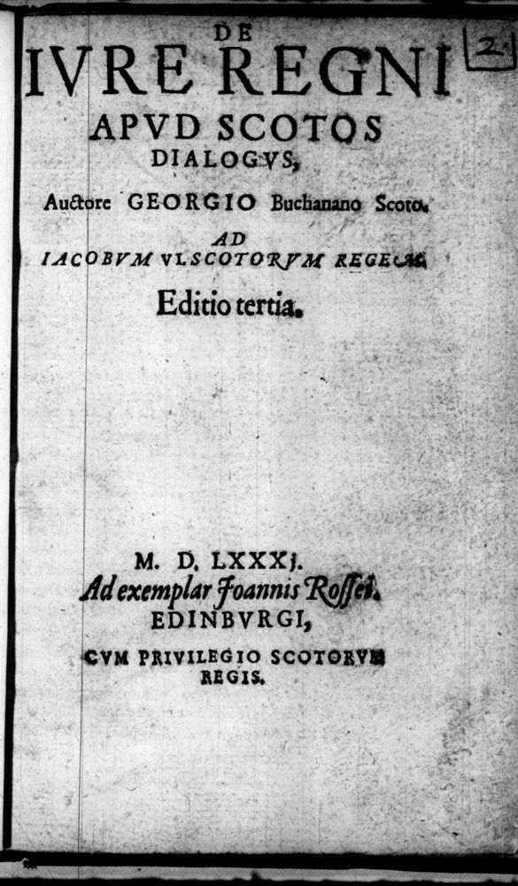

The king as speaking law (p. 16)
Latin: p. 16, scan. The speaker is “M.” (Maitland), who is arguing with Buchanan’s other character. Highlighted: Lecky’s words.

… For kings, then, free in other respects, this one rule of government is laid down: that they should shape their actions and speech to the prescriptions of the laws, and should distribute rewards and punishments, the greatest bonds that hold a society together, from their sanctions. Finally, as the greatest master of administering a commonwealth says, that the king should be a speaking law, and the law a silent king. …
Original Latin
… Regibus igitur cætera liberis hic unus imperii modus est præfinitus, ut suas actiones & orationem ad legum præscripta conformarent: & præmia pœnasque, maxima societatis continenda vincula, ex earum sanctionibus dividerent. Deniqe quemadmodum ait summus administrandæ reipub. Magister, ut rex esset lex loquens, lex Rex mutus. …
| Lecky, 1865 | Buchanan, 1581 | |
|---|---|---|
| Latin | Rex, lex loquens; lex, rex mutus. | ut rex esset lex loquens, lex Rex mutus. |
Lecky drops the introductory “ut … esset” and the author’s attribution to “the greatest master of administering a commonwealth”; the 1581 print has no punctuation between “lex loquens” and “lex Rex mutus” that I could read. Lecky’s “tersely puts it” therefore slightly overstates Buchanan’s authorship: he is quoting a maxim, which he does not name in the words I read. I have not identified its source.
Editor’s notes on this page
In note 83 Lecky says Buchanan “tersely puts it”: “Rex, lex loquens; lex, rex mutus.” The words are Buchanan’s, but the sentence is not his own invention and Lecky’s punctuation is not the print’s. Buchanan has his interlocutor say that, as “the greatest master of governing a commonwealth” put it, the king should be a speaking law and the law a silent king.
Further down the rabbit hole
Sources that Lecky cites in the notes next to the ones that cite this page.
- Knox, The AppellationWhy the English should have put Queen Mary to death
- Buckle, History of Civilization in EnglandWeather and credulity, and the Scottish clergy’s Devil who had been studying for five thousand years
- Macaulay, History of England and EssaysMacaulay on Puritans, bear-baiting and the servile Church
- An Homily against Disobedience and Wilful RebellionHell as the prison of rebels: the Church of England preaches obedience
- Barrington, Observations on the More Ancient StatutesHenry VIII’s 72,000 hangings, and why English thieves had “better hearts”
- Aquinas, Summa theologiae, II-IIHeretics and forgers; the usurper’s subjects


Backlinks
Every place in Rationalism in Europe that links to this page (generated automatically when the site is built).